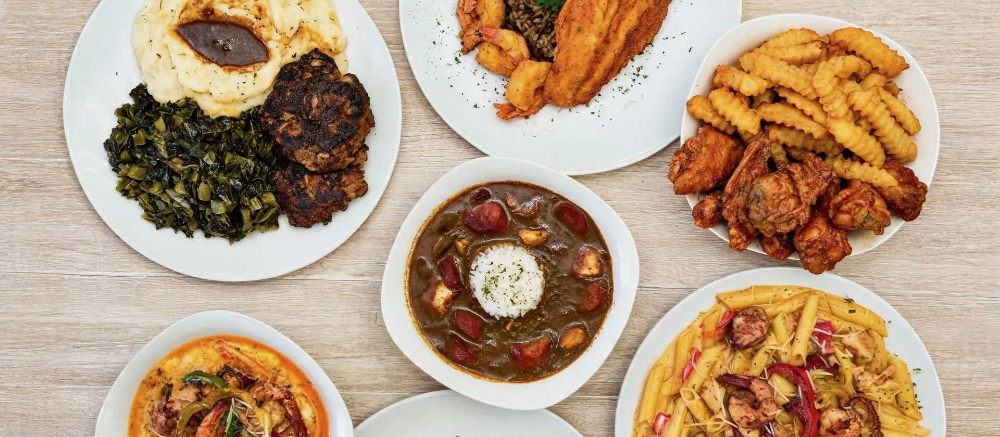

If you are in Houston for a few days, you will eat well almost anywhere. The trick is spending your meals on food you cannot get back home. This guide covers what makes Houston such a good eating city, why a neighborhood restaurant can be a smart stop on your trip, and which Southern dishes are worth ordering while you are here.
We are Bayou Fork Kitchen, a Cajun, Creole and Southern kitchen in Southwest Houston, so we have a point of view. We have tried to keep this useful whether or not you ever visit us.
Houston Is One of the Best Cities to Explore Through Food
According to Visit Houston, the city has roughly 13,000 restaurants serving food from more than 70 countries, and national food writers have been calling it one of the country’s most exciting food cities. That variety is not an accident. Houston is a port city on the Gulf Coast with a very large, very mixed population, and every wave of newcomers has brought a kitchen with them.
The result is a city where Texas barbecue, Tex-Mex, Gulf seafood, Vietnamese cooking and Southern comfort food all count as local. Louisiana food is part of that story too. As the overview of Houston cuisine notes, Louisiana Creole families who settled here around the 1920s brought their cooking with them, and the style spread across the city over the decades. Houston even has its own Viet-Cajun crawfish tradition, born where Vietnamese shrimpers and Louisiana seasoning met on the Gulf Coast.
Because the city is so spread out, the best meals are often not in the visitor districts. They are in strip centers and corner lots in neighborhoods you reach by car, run by people who cook for the same customers every week.
Why Locally Owned Restaurants Are Worth Discovering
There is nothing wrong with eating near your hotel or a major attraction. It is convenient, and plenty of those restaurants are good. But if you only eat where the crowds are, you can miss the places locals actually return to. Here is what a neighborhood, locally owned restaurant tends to offer a visitor:
- Cooking with a point of view. A small kitchen cooks the dishes its owners grew up on instead of a menu built for every tourist taste.
- Real conversation. When the owners are in the building, you can ask what is good today and get an honest answer.
- Everyday prices. Neighborhood restaurants price for regulars, not for a once-a-year trip, so a full plate often costs less than you expect.
- Easy logistics. Many have a drive-thru, free parking and early hours, which helps if you are traveling with kids or have a flight to catch.
None of this means big-name or downtown restaurants are traps. It simply means that if you have a handful of meals in Houston, saving one or two for a neighborhood spot gives you a fuller picture of the city.
Southern Dishes Worth Trying During Your Houston Visit
If you are new to Southern, Cajun and Creole cooking, these are the dishes to look for. Most are slow-cooked, seasoned deeply and built to be shared or taken home for later.
- Gumbo: a dark, savory stew thickened with a roux and loaded with seafood or sausage, served over rice. It is the dish most people think of first. For a deeper dive, see our guide to gumbo, étouffée and jambalaya.
- Shrimp and grits: seasoned shrimp over creamy grits in a rich sauce, popular at breakfast, lunch and dinner alike. Here is where to get shrimp and grits in Houston.
- Crawfish étouffée: crawfish tails smothered in a buttery, peppery sauce over rice. Catfish and shrimp versions follow the same idea.
- Fried catfish: cornmeal-crusted and crisp outside, tender inside. A Gulf South staple.
- Fried pork chops: a plain-spoken Southern plate that is hard to beat when it is cooked fresh.
- Red beans and sausage, dirty rice, collard greens, baked mac and cheese, candied yams: the sides and supporting plates that make a Southern meal feel complete.
Not sure how Cajun and Creole differ? Our short explainer on Cajun vs. Creole food will get you up to speed before you order.
Discover Bayou Fork Kitchen in Southwest Houston
Bayou Fork Kitchen is a family-run Cajun, Creole and Southern kitchen at 10600 Fondren Road in Southwest Houston, in the Brays Oaks area (the business identifies as Black-owned and women-owned on Google). It is not downtown, and it is not in Pearland. It is a neighborhood restaurant, easiest to reach by car, with a drive-thru and a free parking lot.
The menu covers the dishes above and more: gumbo, crawfish étouffée, shrimp and grits, catfish Bienville, fried shrimp po’boys, Mardi Gras pasta, Sweet Heat wings, fried pork chops, meatloaf and red beans and sausage. Sides include dirty rice, baked mac and cheese, greens and candied yams. Breakfast starts when the doors open at 6:30 AM, with biscuits, grits, breakfast tacos and chicken and waffles. Anything on the menu can be made to order.
If you want a guided first visit, our first-timer’s guide walks through what to order and how ordering works.
What Houston Customers Are Saying About Bayou Fork Kitchen
As of November 3, 2026, the Google listing for Bayou Fork Kitchen shows a 5.0 rating across 85 reviews. That count changes as guests post, so check the listing for the current number. Here are three recent reviews, quoted exactly as written:
“The food was amazing. Great Portions for the price. Food is hot and fresh. I’m stopping on any time I drive by. … You won’t find better Louisiana cooking in Houston than here. Periodt!”
“I’ve been waitingggg for some food like this since I moved from Louisiana years ago!! I went on my lunch break and ordered the shrimp & grits, plus the popcorn shrimp with fries for my daughter, and everything was phenomenal. I’ve tried just about every Cajun/Creole spot in Houston, and this is THEEEE best! The flavor was on point and it honestly felt like a little taste of home. Definitely found my new go-to spot!”
“Food is Amazing, great service highly recommend. Ms Penny and Mr Blake are wonderful”
Reviewers are quoted by the display names shown on Google; the first and third quotes omit trailing emoji, and the first omits one sentence about a photo, marked with an ellipsis. Together they touch on what we hear most: flavor that reminds people of Louisiana, portions that feel fair for the price, and friendly service. Leave a Google review after your visit and tell future travelers what you ordered.
Great Southern Food Doesn’t Have to Be Expensive
We will not claim to be the cheapest restaurant in Houston, and that is not the goal. The goal is a full, freshly cooked plate at a price that does not make you wince. These are current prices listed on our menu and breakfast menu; other items, including gumbo and crawfish étouffée, are priced on our DoorDash page.
- Bayou Breakfast (eggs, sausage or bacon, biscuit or toast, grits or hash brown): $10
- Fried pork chop: $10
- Chicken and waffles: $14
- Shrimp and grits: $15
- Catfish étouffée: $16
- Mardi Gras pasta: $16
- Fried catfish and shrimp: $16
- Catfish Bienville: $17
Prices can change, so confirm on the menu before you order. Guests who tagged their price range on Google chose $10–20 per person.
Add a Local Southern Food Stop to Your Houston Itinerary
Bayou Fork Kitchen is a good fit if you are:
- A first-time Houston visitor who wants one meal that tastes like the Gulf South.
- Traveling with family and need a quick drive-thru or an easy takeout order that works for kids.
- In town for business, with an early start or a lunch break to fill.
- Exploring Southwest Houston, or planning group catering for a reunion, game day or office event. See our catering guide.
Bayou Fork Kitchen
10600 Fondren Road, Houston, TX 77096
Phone: (832) 992-7335
Hours: Monday–Saturday, 6:30 AM–7:30 PM. Closed Sunday.
Ordering: drive-thru, pickup, or DoorDash delivery.
Get directions on Google Maps · See the full menu
Houston rewards curious eaters. Spend one meal with us and you will leave with a plate you will remember and a better sense of the neighborhood. We would be glad to see you.